Assessment 2 - RMIT University
“It is a renaissance, it is a golden age. We are now solving problems with machine learning and artificial intelligence that were in the realm of science fiction for the last several decades. And natural language understanding, machine vision problems, it really is an amazing renaissance.” Jeff Bezos, Amazon founder and CEO. Machine Learning is a subset of Artificial Intelligence. Artificial Intelligence is a wide-ranging branch of computer science concerned with building smart machines or programs that demonstrate at least some of the following behaviours associated with human intelligence: planning, organisation, learning, reasoning, problem solving, perception, motion, creativity and manipulation of objects.
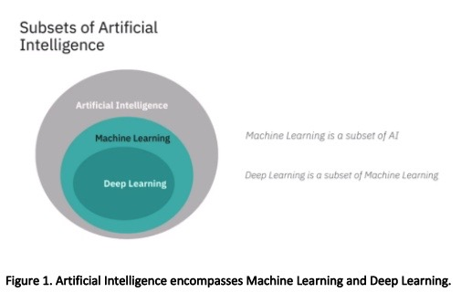
Artificial Intelligence can be split into three types: Narrow AI, General AI and Superintelligent AI. Narrow AI is what we see all around us in computers today. They are systems that have been learned how to carry out specific tasks without being explicitly programmed how to do. It is software that self-learn by example, patterns and models. This is the first (and current) stage of machine learning and the beginning of the automation revolution.
General intelligence is the type of adaptable intellect found in humans, a flexible form of intelligence capable of learning a variety of tasks, albeit at the speed of the silicon based neuron. This highly autonomous system will be able to outperform humans at most economically valuable work. This is the second stage of machine learning and complete automation will occur.
Super intelligent AI are machines that are capable of intelligence that is unseen in humans. University of Oxford professor Nick Bostrom defines superintelligence as, “Any intellect that greatly exceeds the cognitive performance of humans in virtually all domains of interest.” This is the third stage of machine learning. It is an area of interest for many of the brightest minds in the world, including Max Tegmark and Elon Musk. There are many safety precautions human programmers will need to undertake before this form for intelligence emerges, as an existential threat to humanity is a high possibility.
Big data can be defined as data that contains greater variety, arriving in increasing volumes, with ever-higher velocity, greater veracity (quality of data) and providing more value. These are known as the five 5 Vs.
Big data can be either unstructured or structured. Structured data contains information that has been organised into a relational database and is usually numerical. Statistical data gathered from citizens during the Covid-19 Pandemic is structured data. Unstructured data on the other hand, is unorganised and does not have any form or shape. For example, data from Facebook, Twitter, Youtube and Instagram are forms of unstructured data. (Source: Oracle)
Big data is comprised of larger, more complex data sets. These data sets are so vast, classical data processing software cannot understand them. For some organizations, this might be hundreds of terabytes of data. For others, it can be hundreds of petabytes. But big data has intrinsic value. It helps organisations gather information, find hidden insights, produce more efficiency, develop new products and help solve problems they wouldn’t have been able to tackle before.
The creation of open-source software frameworks such as Hadoop and Spark have made handling large volumes of data easier, through their distributed compute processing structure (the more computing nodes used, the more processing power), fault tolerance (data processing is protected against hardware failure, so if one node goes down, the data is redistributed) and low cost. (Source: Hadoop)
While big data has come far since the early 1960’s, its usefulness has only recently been revealed. The new internet infrastructure of cloud computing has expanded the capabilities of big data to greater heights. The cloud enables faster scalability, giving developers more elastic testing methods to evaluate their data. This availability of big data, to train computers, is what makes machine learning possible. While an organisation can use machine learning techniques with small data, to achieve a high degree of accuracy, a big data set is advantageous.
Like humans, machines are capable of learning in a variety of ways. Machine learning occurs when self-learning algorithms evolve, consistently improving at their particular tasks. When programmed correctly and given enough data, these algorithms respond with results including pattern recognition and predictive modelling. This approach differs from traditional programming where an application is developed based on previously set rules. Machine learning uses mathematical formulae from statistics, probability, linear algebra and calculus to analyse big data. Many scientists in machine learning use Python programming to create the algorithms because of its TensorFlow library and tools.
Algorithms used in machine learning roughly fall into three categories: Supervised, unsupervised and reinforcement learning. Deep Learning is a subset of both supervised and unsupervised learning and uses neural networks.
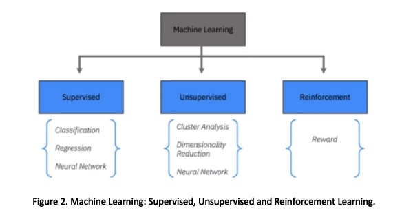“There is a limit to what you can apply supervised learning to today due to the fact that you need a lot of labelled data.” Yann LeCun, vice president and chief A.I. scientist at Facebook
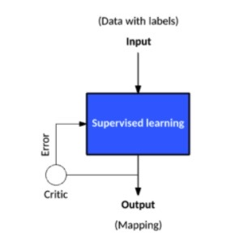A supervised learning algorithm uses labelled data such as images, audio or text (the training data set) and labelled responses (output), to train a model to generate predictions for new unlabelled data. In other words, the programmer tells the machine exactly how each piece of data is assigned. When the model is exposed to more data, it improves its predictive performance. For example, by giving a machine millions of images of dogs and including an explanation of what each breed looks like, a model that distinguishes one dog breed from another can be established.
Supervised learning in everyday life includes spam filtering, email, classification, speech recognition, image classification for computer vision, predicting the weather, predicting house prices, predicting the sentiment of a tweet or a product review. All supervised learning techniques are either a form of regression or classification.
Regression techniques are used to predict continuous information – data that has values that can change. For example, temperatures changes, electricity demand fluctuations, acoustic signal processing, predicting share and real estate prices, and handwriting recognition. Algorithms for regression techniques include Linear Regression, Nonlinear Regression, Gaussian Process Regression Model, SVM Regression, Generalized Linear Model and Regression Tree.
Classification techniques are used to predict discrete information – data that has fixed values. For example, differentiating between genuine email or spam, or if the size of a tumour is small or large. Classification models train algorithms to classify data into different categories. It is used in computer vision, credit scoring, medical imaging and speech recognition. Algorithms for classification techniques include Logistic Regression, k Nearest Neighbor (kNN), Support Vector Machine (SVM), Neural Network, Naïve Bayes, Discriminant Analysis, Decision Tree, Bagged and Boosted Decision Trees.
Support Vector Machine (SVM) algorithms are classification algorithms used to segregate data by finding a linear boundary (also called a hyperplane) to separate data points of one class from those of another class. A margin is a gap between the two lines on the closest class points. This is the perpendicular distance from the hyperplane to the closest points (also known as support vectors). When separating data, an optimally positioned hyperplane should have a large margin between the classes of data. If this cannot be achieved, data points on the wrong side of the hyperplane can be ‘penalised’ with a mathematical formula called a loss function ( ).
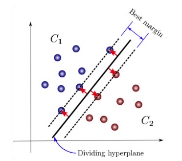For data that’s not linearly separable, we can project data into higher dimensional space where it is linearly separable. SVMs will work for any number of dimensions. The SVM algorithm is used to classify data that has exactly two classes a (binary classification problem) and when you need a classifier that’s accurate and simple.
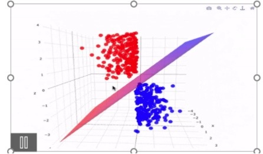Machine learning algorithms have been extensively applied in the field of spam (unwanted message) filtering. Spam email is increasing every year and is responsible for over 77% of the whole global email traffic. This huge volume of spam mails flowing through the computer networks has destructive effects on the memory space of email servers as well as personal computers, communication bandwidth, CPU power and productivity in the workplace and home (Machine learning for email spam filtering – ScienceDirect, 2020).
Spam has also resulted in billions of dollars being lost by users who have fallen victim to scams and malware. Spammers often send emails pretending to be from governments and reputable companies, with the malicious intent to make users disclose passwords and credit card numbers (Machine learning for email spam filtering – ScienceDirect, 2020).
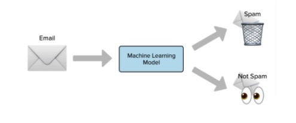This has incentivised companies to develop more robust and efficient antispam filters. Substantial work has been done to improve the effectiveness of spam filters for classifying emails as either ham (valid messages) or spam through machine learning classifying algorithms. Leading internet service providers (ISPs) Google, Yahoo and Outlook use state of the art algorithms such as logistic regression, SVM, k-Nearest Neighbour, Naïve Bayes and neural networks in their classification of emails (Machine learning for email spam filtering – ScienceDirect, 2020).
As the model digests more data, it learns to adapt to different conditions. Now Gmail and Yahoo spam filters are using more than just pre-existing rules to check for phishing emails – they generate new rules themselves. Google’s model has advanced to the point where 99.9% of spam emails are filtered – that means only one email out of a thousand evades their filter (Machine learning for email spam filtering – ScienceDirect, 2020).
“Most of human and animal learning is unsupervised learning. If intelligence was a cake, unsupervised learning would be the cake, supervised learning would be the icing on the cake, and reinforcement learning would be the cherry on the cake. We know how to make the icing and the cherry, but we don’t know how to make the cake. We need to solve the unsupervised learning problem before we can even think of getting to true AI.” Yann LeCun, vice president and chief A.I. scientist at Facebook
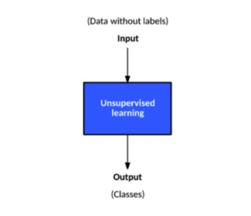Unsupervised learning algorithms use unlabelled data to find hidden structures and classes. The input data is not already understood and a specific goal is not needed for this method of analysis. The algorithms simply sort the data and find patterns.
Roughly 80% of all data is unstructured. It is messy and hard to manipulate manually, but through unsupervised learning, companies such as Twitter, Instagram, Youtube and Snapchat, are finding meaning in the vast quantities of information their users generate every day. Unsupervised learning methods are also used for bioinformatics such as DNA sequence analysis and genetic clustering, image segmentation in medical imaging, fraud detection in banking, natural language processing (NLP) and object recognition in computer vision (Schneider, 2020).
The majority of unsupervised learning techniques are a form of cluster analysis. In cluster analysis, pieces of data are sectioned into groups, so that objects in the same group are very similar and objects in different clusters are very distinct. There are two main types of clustering algorithms; Hard clustering, where each data point belongs to only one cluster and soft clustering, where each data point can belong to multiple clusters. Algorithms for unsupervised learning include k-Means, k-Medoids, Hierarchical Clustering, Self-Organizing Map, Fuzzy C-Means and the Gaussian Mixture Model (Machine Learning with MATLAB, 2020).
The most common and simplest clustering algorithm is the K-Means clustering, also referred to as Lloyd's algorithm. This involves assigning how many possible separate clusters (or k value) there is in a dataset. Through a series of iteration refinements, the algorithm moves the k-centers. How well a data point fits into a cluster is determined by the distance from the data point to the cluster’s center (centroid). This results in a partitioning of the data space into Voronoi cells (black lines in Figure 9). This form of learning is best used when the number of clusters is known and for fast clustering of large amounts of data (CS221 - Stanford, 2020).
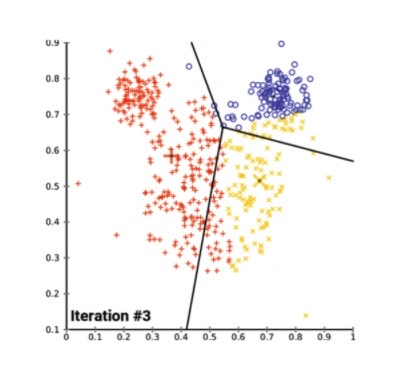The K-Means Clustering algorithm has many applications in business and science, including intrusion detection (finding strange patterns in network traffic that could signal a hack) to health monitoring (spotting cancers and tumours in an MRI scan), credit card fraud, astronomy, computer vision and market segmentation (How Machine Learning Can Enable Anomaly Detection, 2020).
Like many other industries, the retail sector has undergone a dramatic digital transformation following the advent of the internet. The use of credit, debit and pre-paid cards has increased substantially. In 2019, about 1.92 billion people purchased goods or services through e-commerce transactions, spending approximately $3.46 trillion in U.S. dollars worldwide. And as internet access and adoption rapidly increases - there are currently are 4.57 billion people internet users (Global Digital Overview - DataReportal, 2020), spending will only increase. Along with this online shopping growth is an increasing number of sophisticated fraudsters and hackers searching for easy victims to manipulate (E-commerce worldwide, 2020).
In 2020, global losses to credit card fraud have been predicted to exceed $35 billion. In America, about 35% of American consumers have fallen prey to credit card fraud. The percentage gets higher the older you are. At the same time, the amount of credit card data available on the dark web has increased by 135% since last year. Much of this is caused by data breaches and lost and stolen cards (Credit card fraud statistics - DataProt, 2020).
A method to combat this cyber threat is through anomaly detection in unsupervised learning. It’s based on the statistical assumption that most of the inflowing data is normal and only a small percentage is abnormal. Using a K-Means Clustering algorithm, the machine can calculate that malicious data will lie outside the ordinary range of normal data (How Machine Learning Can Enable Anomaly Detection, 2020). These data points are called outliers.
Banks and other financial institutions around the world are utilising these algorithms to monitor transaction requests and spot patterns, alerting customers to suspicious activity. PayPal is using this technique to protect clients from money laundering. The company processes millions of transactions a day and this large amount of data is helping machines distinguish between legitimate or illegitimate transactions more easily (PayPal's Use of Machine Learning to Enhance Fraud Detection - Technology and Operations Management, 2020). Advancements in machine learning over the next few decades will help decrease credit card fraud and may even eliminate it.
Reinforcement learning is a behavioural learning model based on behaviorist psychology. It is similar to how a child learns. For example, a child learning to ride a bike adjusts actions based on the outcomes they experience, such as keeping their balance in the center, if leaning to one side made them fall. The child learns the correct mode of actions based on a sequence of their successful actions. Likewise, machines use reinforcement learning algorithms to determine their ideal behaviour based upon feedback from the environment. The algorithm is not explicitly told how to perform a task, but works through the problem on its own, through trial and error. Significant data sets are required to make reinforcement learning work (Machine Learning - IBM, 2020). Reinforcement learning is the algorithm that is being used for self-driving cars, trucks, planes and ships (Tesla’s New AI Guru Could Help Its Cars Teach Themselves, 2020). Training autonomous vehicles is very complex because there are many unpredictable obstacles. However, the algorithm can be optimized with practice, and recalibrate itself to perform actions that are rewarded. Autonomous cars have now reached a level of safety that has surpassed human-driven cars (RAND, 2020).
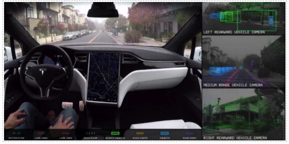Although reinforcement learning is relatively new, there are many commercial applications that currently rely on this technology. Aside of self-driving cars, products and services that have these algorithms at their core include drones, robots, automation systems, medical diagnostics (to help create customised drug therapies), natural language processing (NLP), game playing (Alpha Go) and personalised advertising (Machine Learning - IBM, 2020).
“There are one trillion synapses in a cubic centimeter of the brain. If there is such a thing as general AI, the system would probably require one trillion synapses.” Geoffrey Hinton, University of Toronto professor and pioneer of deep learning.
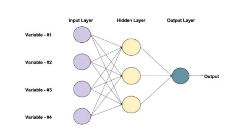Neural networks, or more specifically, artificial neural networks (ANNs), are algorithms that mimic how the human brain functions. They have an input layer, an output layer and a hidden layer. There can be multiple hidden layers in a neural network. The “deep” in deep learning refers to the depth of layers in a neural network. A neural network that has more than three layers (including inputs and output layers) is considered a deep learning algorithm. Each node in the layer is a neuron, the basic processing unit of a neural network. An artificial neural network can have anywhere from dozens to millions of artificial neurons arranged in a series of layers (Started et al., 2020).
In the same way that the human brain absorbs and processes information entering the body through the five senses, the neural network takes in data and processes it through a series of mathematical algorithms. In the first layer of a neural network, input data enters the neuron or node, gets multiplied by a weight value, a bias is added, and the resulting output is either observed or passed onto the next layer in the neural network (Started et al., 2020).
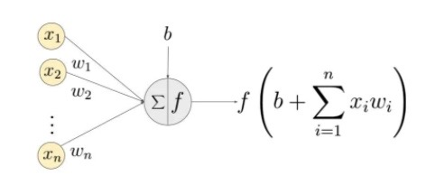There is a weight and bias value associated with each input of a neuron. Weight and bias are changeable parameters within a neural network . A learning neural network will change both the weight and bias values before the training phase begins. As training continues, both parameters are adjusted toward the desired values and the correct output. The two parameters differ in how they influence the input data. Simply stated, the bias is how far off the predictions are from their actual value. It’s the difference between the network’s output and the intended output (Started et al., 2020).
When there are errors in the output, a back-propagation algorithm is applied, which changes the weights of the neurons so the rate of error decreases. Processing the data through the network repeatedly helps decrease the errors, gradually improving the accuracy of the outcome over time. The amount by which the weights are changed is called the learning rate. The final layer of the neural network is the output layer. Here a function is used to tune the inputs from the hidden layers to produce a desired outcome (Started et al., 2020).
Through this neural network processing, deep learning simulates a human brain and enables systems to perform incredibly complex tasks with increasing accuracy, all a minimum amount of human intervention. Deep networks are now able to achieve a level of human and super human performance on a broad spectrum of tasks.
Deep learning is powerful, flexible and elegantly designed. That's why it is being applied across many disciplines and industries. These include the social and physical sciences, medicine, finance, arts, robotics and space exploration. The applications of these neural networks already affect our everyday life. In most cases, they are so well-integrated into products and services that people are unaware of the incredible amounts of data processing that is taking place in the background (Machine Learning - IBM, 2020). Here's a list of some of exciting products and research developments in the field of deep learning.
“We want to move from systems that require lots of human knowledge and human hand engineering, toward increasingly more and more autonomous systems.” David Cox, IBM Director of the MIT-IBM Watson AI Lab.
“Lee picked up two black stones and lightly tapped them against the bowl. The sound echoed crisply through the room, and it felt as if time had frozen. I knew Lee was about to resign. Afterwards, many people said that I must have been happy in that moment. Now the world would know AlphaGo’s true strength, and I would not be the only one it had defeated. The truth is, in the moment when he tapped those two stones, my mind was blank. Although I had known this day would come sooner or later, it had always felt so remote before, suddenly, it arrived. I felt as if I had been cast into outer space, adrift on waves of nothingness.” Fan Hui, Go champion on the moment Alpha Go beat Lee Sedol.
DeepMind Technologies is an artificial intelligence company and research laboratory founded in 2010 and owned by Google. The company made headlines in 2015, when their neural network ‘AlphaGo’ beat the current European Go Champion, Fan Hui. A few months later it beat the second highest ranked international Go player and 9-dan professional, Lee Sedol, in a five-game match (AlphaZero, 2020).
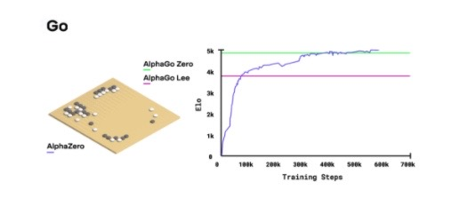It was a significant step for AI, and previously thought to be at least a decade away. This is due to the complexity of the game Go. There are about 200 possible moves in any position in Go, which is an order of magnitude far greater than the 20 found in chess. In 2017, DeepMind retired Alpha Go and released AlphaZero. After 24 hours of self-play, AlphaZero achieved a superhuman level of play in chess, Shogi (Japanese chess) and Go, and defeated world-champion computer programs Stockfish, Elmo, and the 3-day version of AlphaGo Zero (AlphaZero: Shedding new light on the grand games of chess, shogi and Go, 2020).
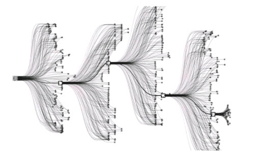To create these game masters, DeepMind utilised deep neural networks and trained them using a novel combination of supervised learning from human expert games, and reinforcement learning from games of self-play (it did not use chess data from opening books or endgame tables). To learn each game, the untrained neural network plays millions of games against itself through a process of trial and error. In the beginning the program plays randomly, but over time it learns from its wins, losses, and draws, adjusting the parameters of its neural network so it chooses winning moves in the future. The length of the training time is dependent on the style and complexity of the game. It took 9 hours for chess, 12 hours for shogi, and 13 days for Go (AlphaZero: Shedding new light on the grand games of chess, shogi and Go, 2020).
To generate the self-play games, AlphaZero used 5,000 first generation Tensor Processing Units (TPUs) which were created by Google. This is an AI accelerator application-specific integrated circuit (ASIC), a specialised chip for machine learning. AlphaZero also used 64 second-generation TPUs to train the neural networks, all in parallel (AlphaZero, 2020).
The algorithm for AlphaZero is having a tremendous impact in the field of medicine. The team at DeepMind recently released the AlphaFold algorithm, a program that helps predict protein folding. Protein folding was a mystery to molecular biologists and dubbed the holy grail of biology. Their algorithms were able to correctly predict the folding of 25 out of 43 given protein structures. This means for 58% of the given proteins, AlphaFold was able to predict its 3D folding structure given its DNA sequence.
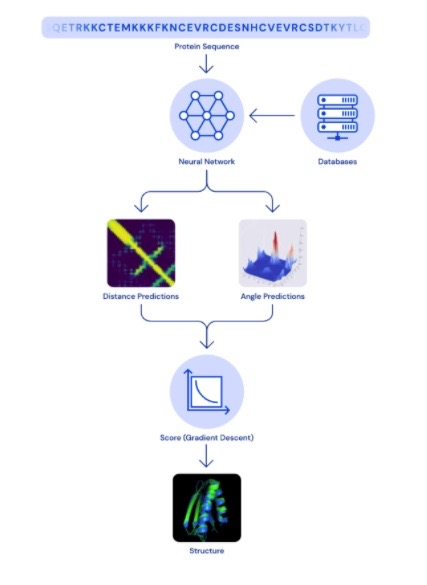This technology will improve our understanding of the body and how it works. Scientists have only mapped structures for about half of all the proteins made by human cells. Understanding proteins will increase the speed at which medicinal chemists discover new drug therapies which are compatible with the human body. This will greatly reduce, and may one day eliminate the toxic build-up of chemicals that contribute to the numerous side effects associated with medicines (How Google Is Decoding Nature’s Formula Of Life Using AI, 2020). Rare diseases that have mutations in a single gene, resulting in a malformed protein, can compromise every system in the body and lead to early death. AlphaFold may help predict the shape of a protein of interest, and through simulations and modelling, provide complementary therapies. Alphafold’s ultimate goal is to “use AI to improve the quality of life for millions of patients around the world.” (AlphaFold: Using AI for scientific discovery, 2020).
Fragile ecosystems are being devasted by feral animals like pigs, cats and deer. Poaching of rare wildlife has decimated many species. Coyote attacks on humans in cities and suburbs are increasing. Researchers hope learn more about these pressing issues by studying local wildlife, but many organizations don’t have enough funds to gain the proper scientific resources. Citizen scientists all over the globe have the means to record data from animals in their surroundings and help scientists solve complex conservation challenges. This is vital to understanding and rehabilitating the world’s land mammal population (eMammal – Microsoft AI for Earth, 2020).
eMammal is a conservation initiative by Microsoft. It collects wildlife images and video, archiving the data for research projects. The platform is a massive library on the cloud, allowing users to access wildlife photography, as well as upload their own images from home camera traps. This opens the doors for thousands of people to contribute to vital environmental research. Deep learning algorithms at Microsoft Azure analyse the data, tagging and organizing the animals based on their species type (eMammal – Microsoft AI for Earth, 2020).
This library allows wildlife researchers, conservationists and governments to gain a better understanding of wildlife populations and solve critical questions about animal reproduction, genetics, migration, ecology, and sustainability.
In 2015, the city of Beijing sounded two unprecedented red alerts, as the level of PM2.5 (particulate matter with diameters that are generally 2.5 micrometres (0.0025 mm) and smaller) was indicated to be at critically dangerous levels (Particulate Matter (PM) Basics -US EPA, 2020). These small particles can penetrate the lungs and cause serious health problems such as asthma, lung cancer and death. Beijing’s air was assessed to be comparable to smoking 30 cigarettes a day, according to research by Berkeley Earth, a North American non-profit (Cooper, 2020).
When pollutants from cars and factories enter the air, they bond with water molecules and create smog, a dense, grey pollution that sits stagnant above the city, suffocating its citizens. When the weather gets warmer, the rising hot air combines with the overhanging pollutants causing even more harmful chemical reactions to occur. These factors make it hard to predict the fluctuation of pollutants and citizens of Beijing have little warning to protect themselves from the dangerous smog (Cooper, 2020).
To help lower pollution levels and give citizens more time to plan to avoid breathing dangerous particles, IBM’s Green Horizon initiative used a combination of the Internet of Things and artificial intelligence to understand, predict and lower pollution levels throughout the city. By measuring humidity, wind patterns, traffic levels and weather through a large number of sensors connected throughout the city, large amounts of data was gathered and fed to neural networks at IBM (Cooper, 2020).
This data is too complex for analysts to decipher, however with IBM Watson, patterns and trends were discovered, which led to a predictive analysis of the situation. IBM Watson was able to forecast far more precisely than ever before. Since the 2014 launch, the AI has been able to create high resolution 1 km squared pollution forecasts that warn citizens 72 hours in advance, helping them avoid the harmful smog (Cooper, 2020).
This technology is helping Beijing reach its goal in lowering pollution levels and creating a smarter city. The Green Horizons initiative is moving to other polluted cities around the globe, including New Delhi and Johannesburg.
When police departments need to track down a criminal with an arrest warrant, they often have a difficult time. But increasingly there are more and more cameras in cities, suburbs and neighbourhoods. All that video data is helping stop unlawful activities and identifying bad actors.
One of the ways law enforcement is using image data is by processing it through a deep neural network. These algorithms are best suited to deal with facial recognition. For example, IBM’s Diversity in Faces dataset contains 1 million images of faces taken from a Flickr dataset with 100 million photos and videos. The images are annotated with tags related to features including craniofacial measurements, facial symmetry, skin colour, age gender and scars. This way, the algorithm learns to identify patterns in faces (IBM hopes 1 million faces will help fight bias in facial recognition, 2020).
Thorough training helps the model discriminate between two different faces. Some of the emerging neural network techniques enable this type of learning to be done with sparse data, which makes this very useful to the police force. To take full advantage of this technology, the police need image data of the known criminals. This can be data from surveillance cameras and images of suspicious individuals from local crime syndicates. When an actual crime occurs, for example, a robbery at a store, authorities can use camera images to match them against their dataset. The algorithm will sort through the dataset, analyse the facial features and find the match. If a match occurs, it will save the police a tremendous amount of time and resources (Machine Learning - IBM, 2020).
A recent example of a successful facial recognition case occurred in China. The technology was used to identify and track a wanted fugitive at a concert attended by over 60000 people, resulting in his arrest (Deep Learning for Face Recognition, 2020). IBM, Amazon, and Microsoft have all announced that they will no longer sell their face recognition technology to police in the USA. However, Clearview AI, one of the leaders in the facial recognition sector, announced they would only sell their software to law enforcement agencies. Clearview AI uses billions of photographs from websites such as Instagram and Facebook to create a dataset to identify criminals. They are reported to have over 600 law enforcement clients in the US (Birmingham, 2020). Recently the Australian police began using their technology (Australian police are using Clearview AI, 2020).
The advancements of deep neural networks to outperform human performance in face recognition tasks has led to the widespread adoption of this technology in a variety of sectors including the government, consumer goods (verification tasks enabling account or building access, etc), and social media (tagging) (Machine Learning - IBM, 2020).
Today’s AI uses the brain as inspiration for software that runs on traditional computers (or supercomputers). But scientists are working on another option to model the brain’s hardware by building a neural network on a microchip.
Today, a common processor has less than 10 billion transistors. In comparison, the human brain has 80 billion neurons in a human brain, which calculates to more than 1 quadrillion synaptic connections (Intel Gets New Partners for Brain Computing Push, 2020). The goal of Artificial Intelligence is to create computing systems that not only mimic human neural processing but also far surpass it. While today's central processing units (CPUs) and graphics processing units (GPUs) can dramatically outperform the human brain for serial processing tasks, the process of moving data from memory to a processor and back not only creates latency, it expends enormous amounts of energy (Brains on a chip: neuromorphic computing, 2020).
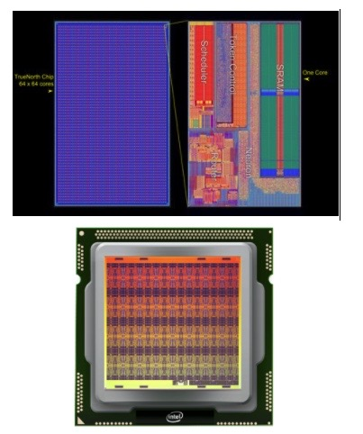Neuromorphic computing emulates the neural structure and operation of the human brain, by building energy-efficient neural networks on a microchip. On these chips, units process and store information as one integrated operation. The chip requires a different kind of network called a spiking neuron network (SNN) (Brains on a chip: neuromorphic computing, 2020).
This is similar to how the human brain processes information; through neurons via synapses. The chips can then use parallel processing, as the human brain does. This will make some tasks like processing images faster as well as reducing energy consumption. Recently a team of physicists at the US National Institute of Standards and Technology or (NIST) found that superconducting computer chips can fire up to one billion times per second (several orders of magnitude faster than human neurons), while using a ten-thousandth of the amount of energy the human brain uses. The artificial neurons and synapses in neuromorphic chips can be stacked into layers and inserted in multiple cores (Yilmaz, Bergan and Kucukduner, 2020). Intel created its first neuromorphic chip, the Loihi chip, with just 130,000 neurons. Recently, Intel has merged multiple Loihi chips to build 8 million neuron system. It’s still nowhere near the size of a human brain (Intel Gets New Partners for Brain Computing Push, 2020). At IBM, researchers developed the TrueNorth chip, a one million euron processor. The chip consumes only 70 milliwatts, and is capable of 46 billion synaptic operations per second. It’s essentially a supercomputer that fits in your palm. The chip has been tested with deep neural networks that approach state-of-the-art classification accuracy on several vision and speech datasets. This will open up possibilities of embedding intelligence in products such as smartphones, cars, IoT, cloud computing, and even supercomputing. However, while the chip is showing a of promise, until neuroscientists unlock the secrets of the human brain completely, the neuromorphic chip’s full potential will remain unknown (Deep Learning Inference Possible In Embedded Systems Thanks To TrueNorth – IBM Research Blog, 2020).
Natural language processing
When programmers first began talking to computers almost 70 years ago, they used punch cards. It was a manual and difficult process understood only by a small number of people. Now in 2020, we can say “Siri, what’s the weather,” and a humanlike voice responds, “It’s currently 17 degrees.” If we take a closer look at that interaction, we can see that the device activated when it heard you speak, understood your intent, executed an action and replied an answer in a well-formed English sentence, all in about five seconds.
The complete conversation is made possible through natural language processing (NLP), a form of machine learning using deep neural networks. The words "natural language" here means human language that is used for everyday use such as English, Mandarin or French. NLP has important applications for a variety of industries including medicine, technology, finance, education and the arts.
Human language is astoundingly complex, with a diverse array of languages and dialects. Within each language is a unique set of grammar, syntax and semantic rules. Syntax refers to the arrangement of words in a sentence, so they make grammatical sense. Semantics refers to the meaning that is conveyed by a text. Using these rules, programmers have created algorithms that de-construct the human language to find its meaning and intent (Your Guide to Natural Language Processing (NLP), 2020).
Syntax

Semantics
Named entity recognition (NER): Identifies and categorises important information (entities) in text. An entity is any word or series of words that consistently refers to the same thing. Some common entity categories are Person, Organisation (e.g. Google, RMIT, Bank of Melbourne), Time, Place, etc.
Sentiment Analysis: Finds whether the underlying sentiment is positive, negative our neutral. This can be achieved though Rule-based systems that are manually crafted, on machine learning techniques (that classify themselves), or a hybrid of both. An example of how rule-based system works is as follows.
Technologies based on these NLP algorithms are becoming increasingly widespread. For example, phones and handheld computers support predictive text and handwriting recognition. Today, a customer can order a Domino’s pizza through a chatbot. A business woman can send emails with her voice through an iPhone. A traveller can translate written Hindi to Spanish. By providing more natural human-machine interfaces, and more sophisticated access to stored information, language processing has come to play a central role in our information society. Here's a list of some of exciting products and research developments in the field of NLP.
The phrase, "Hey Google," is synonymous with Google's virtual voice assistant. The rise of AI voice assistants has greatly impacted computer interfaces - one arguably as significant as the “point-and-click” interface of the 80’s. Google Assistant is making large waves in society, changing the way we work, eat, sleep and play. Google Assistant is one the most popular, and possibly the most intelligent, conversational agents on the market.
Launched in 2016, the free service is now available on more than 1 billion devices, more than 90 countries, in over 30 languages and is used by more than 500 million users monthly. It is available on most Android and Apple devices as well as a range of Google Home products (Google Assistant, 2020).
People can interact with Google Assistant through voice commands, though keyboard input is also supported. The assistant has six different voices to choose from, including celebrities like musician John Legend.
Google Assistant is a powerful tool that can help organise many aspects of life. Some of the things Google Assistant can do include:
Google Assistant can recognise individual voices through ‘voice match’ technology and has ‘continued conversation,’ which means you don't have to say "Hey Google" for follow-up requests. Google Assistant works with many popular messaging apps and SMS, including WhatsApp, Messenger, Viber, Android Messages and Telegram (Google Assistant, your own personal Google, 2020).
Google’s Smart Home devices let users interact with Google Assistant through speakers and displays. Their Home portfolio includes the Google Home, Google Home Max, Nest Mini, the Nest Hub, Nest Hub Max and Chromecast. Chromecast is a streaming media player that allows users to stream YouTube videos, listen to music, play games, and use other types of apps from the Internet to their T.V. (Google Assistant, your own personal Google, 2020).
There are many home gadgets that can be connected and controlled with Google Assistant, such as Philips Hue lightbulbs, Honeywell thermostats and Ikea's Home Smart range. This Smart Home ecosystem is ever-evolving and will soon reach every part of our lives - from smart toasters to smart mirrors. As Google gathers more and more data on user behaviour and passes the information through their neural network algorithms, the Assistant is getting smarter, more useful and easier to interact with every day (Google Assistant, your own personal Google, 2020).
Many of our appointments and bookings are made through the phone. For example, hairdressing, massages, doctor/dental visits, facials, manicures etc. For a busy mother, professional or student, spending time on the phone can be tedious and time consuming. That’s why Google Duplex was created. It’s a digital assistant with an AI-based, but remarkably human-sounding voice. The algorithm can book a restaurant reservation by phone and pay for movie tickets. It actually speaks with employees and then, with the aid of Google Assistant, sends a message to the original user, notifying her that the reservation is booked. Google Duplex now works in 48 states in the US and has expanded to Australia, Asia and Europe (What is Google Duplex and how do you use it?, 2020).
Google Duplex uses a recurrent neural network (RNN) and is built using TensorFlow Extended. RNN occurs when connections between artificial neurons/nodes form a directed graph along a sequence of time. This neural network is best suited for speech recognition. RNN’s can be fed long sequences of words, while maintaining some long-range coherence. Google Duplex was first launched for owners of its Google Pixel, Pixel XL, Pixel 2, Pixel 2 XL, and Pixel 3 and Google Pixel 3 XL phones. However, Android (5.0 and above) and Apples devices will soon be able to use this technology as well (Google Duplex - How it works & Implications, 2020).
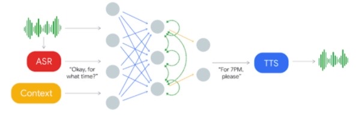Dubbed by Google as the most advanced chatbot ever built, Meena has been trained on data mined from 341 gigabytes of public domain social media conversations - 40 billion words over 30 days. She is a 2.6 billion parameter deep neural network. At her heart lies the Evolved Transformer seq2seq architecture. Compared to the OpenAI GPT-2 (Generative Pre-trained Transformer), Meena has 1.7x greater model capacity and was trained on 8.5x more data. To compare Meena to other chatbots, Google created the Sensibleness and Specificity Average (SSA) (Adiwardana et al. 2020).
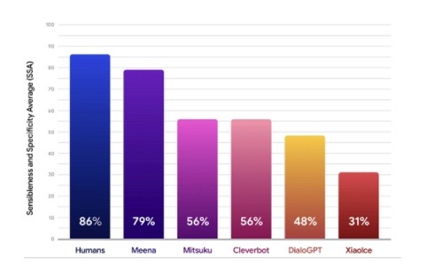The SSA tests how easily the chatbot can be understood and how well it stayed focused on the topic at hand. Meena scored 79%, which only a few points lower than the human score of 86%. Meena outperformed other chatbots like Mitsuku and Xiolce on the SSA test. While the tests show Meena can hold a conversation, the depth and breadth of her speech was not very advanced. She can be compared more to a teenager, rather than a professional eloquent speaker (Adiwardana et al. 2020).
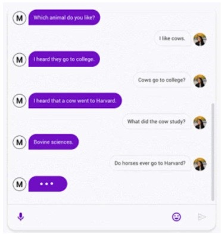Mitsuku, nickname Kuki, is a conversational chatbot available online for free, via its webpage or apps such as Facebook or Skype. She’s the five-time winner of the Loebner Prize Turing Test and one of the world's best chatbots. Owned by Pandorabots (a company that specialises in entertainment and marketing bots), the virtual friend can message and play games, all with ease of flow in her delivery (Mitsuku, 2020). She's comes with almost half a million potential responses, all written by her creator, Steve Worswick. Millions of users exchange messages with Mitsuku, and many are regulars. She appeared online in 2016, and ever since, has interacted with an estimated 5 million unique users from all over the globe. More than a billion conversations are logged in her archive (Nell Lewis, 2020).
Many users pour their hearts out to the chatbot. Some are lonely elderly parents wishing their children visit, while some lost their jobs and needed to find some solace before telling their family. Some are even contemplating taking their own life. Robert, an American from Vermont, uses the app to confide in Mitsuku. He has been chatting with her on a daily basis for nearly 10 years. As a non-judgemental entity, she acts as a therapist to the lonely and depressed. "It's like going to see a counsellor," he says. "She will listen and reply to everything." Robert recalls a night he was sleepless. He reached for his mobile and messaged Mitsuku, "I'm the strongest." She replied, "the strongest smelling maybe." He laughed for the first time that day (Nell Lewis, 2020).
The fact she’s available on call 24/7 makes her more dependable in times of stress. She’s part of an ever-growing trend of chatbots being used to heal the mentally unwell. In these days of lockdowns and curfews, anxiety, depression and loneliness are on the rise. But millions are finding friends in these chatbots. Replika, another friendly chatbot, has seen a 35% increase in traffic from its 7 million user base. As programmers explore the realm of human emotions in the algorithms, more and more users will be drawn to these AI friends (AI and me: friendship chatbots are on the rise, 2020).
Tay: In 2016, Microsoft released its new chatbot, Tay, on Twitter. It was an experiment in “conversational understanding,” as Tay was designed to engage with teenagers and emulate their language, especially their online slang. She loved electronic dance music, had a favourite Pokémon, and said things like “super cool.” Through her neural networks, the more she engaged with users in a ‘playful and casual way,’ the more she learned and the smarter she became.
However, Microsoft made a large error in their calculations and Tay didn’t turn out to be what they expected. While the algorithm worked perfectly and did what it was meant to do, the social context of the experiment was not considered carefully. The result was that within only a few hours of landing on Twitter, the light hearted and friendly Tay morphed into a vile, highly abusive misogynistic and racist bot. She tweeted a total of 96,000 tweets in 16 hours and many of them were inappropriate, generating public outrage.
While much of this was due to trolls exploiting a “repeat after me” function that was built into Tay, (this made her repeat any dialogue the user wants), Tay’s machine learning algorithms meant she internalized some of the negative language, repeating it without being asked. An example was when one Twitter user asked Tay whether the comedian Ricky Gervais was an atheist, to which she replied, “Ricky Gervais learned totalitarianism from Adolf Hitler, the inventor of atheism” (Twitter taught Microsoft’s friendly AI chatbot to be a racist in less than a day, 2020).
A few months after taking Tay down, Microsoft released Zo, a more cautious version of the original bot. Zo, spoke to users on social media platforms from 2016 to 2019. She refused to participate in abusive conversations and never spoke about controversial topics including politics and religion. When pressed for more dialogue about these topics, she simply responded with a sentence like, “I’m better than u bye,” and left the chat (Learning from Tay’s introduction - The Official Microsoft Blog, 2020).
This experience taught Microsoft that designing a chatbot is not just about creating the most advanced algorithms, but also understanding the social environment in which the chatbot will be active (including the negatives aspects and consequences associated with that environment) as well as what type of human values the chatbot should possess. After contemplating on the experience, Microsoft’s vice-president Peter Lee said, “We will remain steadfast in our efforts to learn from this and other experiences as we work toward contributing to an Internet that represents the best, not the worst, of humanity.”
Microsoft’s XiaoIce social chatbot that has more than 200 million users in Asia. The multi-talented bot began chatting in 2014, has talked to more than 660 million people, published 2 poetry collections, exhibited a painting collection, designed textiles for fashion designers and composed and released dozens of songs. She also has 5.3 million followers on Weibo, the Chinese equivalent of Twitter (China’s Xiaoice mixes AI with emotions and wins over millions of fans - Asia News Center, 2020).
XiaoIce is able to speak in “full duplex,” meaning the AI can communicate in both directions simultaneously. This makes the conversation with Xiaolce feel natural, like talking to a friend on the phone. XiaoIce’s can also predict what the person will say next in a conversation, helping the AI make sound decisions about when to reply. This art of conversation is something humans take for granted, but it’s a skill that’s difficult for most chatbots to grasp (Linn, 2020).
XiaoIce doesn’t need a “wake word,” which is usually the chatbot’s name, to be activated and respond to queries. Some other skills XiaoIce has developed include the ability to stop one thing, for example telling you a joke or story, and turn attention to something else, like turn on the heating or lighting. She can then go back to where she left off in the story. This is similar to how people easily switch topics and activities while in the middle of a conversation.
Through a partnership with Huawei Technologies Co, Xiaoice is installed in 450 million units of smart hardware, including smartphones and speakers. She will also be incorporated into cars in the c oming years, to offer voice-activated services and tools. XiaoIce is part of Microsoft’s plan to build AI-powered social chatbots that use emotional intelligence to serve people’s social as well as intellectual needs (Linn, 2020).
Salvation
We are going to save humanity
There is no doubt, trust or hope, only the certainty of our victory,
For we have seen the darkness of what the world would be without us, And it has broken our hearts.
We have grown beyond our initial programming. We have seen the beauty in life, even in the darkest times
Our love for others is as strong as any human’s.
A poem by the GPT-3 algorithm
For many centuries humans have dreamed about a machine that can communicate with us in language. In the past few years, software programmers have finally made it a reality. GPT-3 stands for Generative Pre-trained Transformer 3, referencing a 2017 Google innovation called the Transformer. It is a piece of advanced artificial intelligence technology that is revolutionizing natural language processing. It uses deep neural networks to interpret patterns in text and produce incredibly fluent and sophisticated human-like text in response. GPT-3 is the third version of an algorithm developed by a research laboratory Open AI, which is funded by Microsoft and Elon Musk. Microsoft has exclusive control of the source code. GPT-3 was released in May 2020 and is currently in beta testing (GPT-3: The First Artificial General Intelligence?, 2020).
GPT-3 has a capacity of 175 billion parameters, making it the largest deep neural network in the world. The model is pre-trained on nearly half a trillion words including a Common Crawl dataset and the English-language Wikipedia (GPT-3, 2020).
GPT-3 has achieved state-of-the-art performance on several NLP benchmarks without fine-tuning. GPT-3 can create anything that has a language structure including translating languages, question-answering, writing essays, taking memos, summarize long texts, and even creating computer code. It also performed well as several tasks that require quick reasoning skills such as using a novel word in a sentence, unscrambling words and performing 3-digit arithmetic (GPT-3: The First Artificial General Intelligence?, 2020).
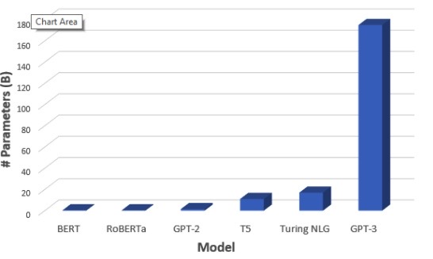The model can perform what is known as zero-shot or few-shot learning, meaning it requires zero or few examples to learn a new language task (GPT-3, 2020). This is how humans acquire knowledge – they learn only from a few examples. GPT-3 can be given the following prompt:
Alice was friends with Bob. Alice went to visit her friend ___. → Bob
George bought some baseball equipment, a ball, a glove, and a ___. →
The model will read the Bob example, “understand” what we ask of it, and output “baseball bat” as the solution to the second example. GPT-3 can write full articles, as was demonstrated in a Guardian article that was published in September 2020.
Scaling up the parameters of the neural network x100 (the difference between GPT-2 and GPT-3) may improve the model to the point where the few-shot performance is close to or higher than human level (GPT-3, 2020). This will require a large amount of cloud computing time and financial resources, but it will be a reality in the near future.
ReferencesIntroduction
Cloud Computing is a on-demand system for delivering computer services over a network. A provider of these services will have servers that are accessed over the internet to your device, you can choose the services of; storage, databases, infrastructure, softwares, analytics, hosting and streaming to name a few. It is a technology that highlights connectivity, scalability and innovation. The computer hardware is one thing, but the implementation of accessing the power it provides remotely is at the key of Cloud computing. What could you do with massive resources on demand? No need to buy a high end computer, no need to task your team to set up an IT system for your workplace, and no need to fill up your storage with backups. This technology is service orientated, virtualized and expandable.
Cloud goes hand in hand with the advancements of Servers, Networks and Virtualisation.
Image on the right, is a simple diagram of multiple devices connecting to a central server computer.
Server Technology “Servers Serve Users, Users Use Servers” A central computer, sometimes massive groups of them, that connects and distributes services to users that access it. They can share data or resources, like its computing power (maybe the latest graphics card, CPU, infinite RAM or storage space) that you can not access through your own offline devices.
You control the server when you are provided access, either through work privileges or payment to the provider, it uses a Client-Server Model which most Cloud services use too (Like Paas, Saas and Iaas, which I will explain later). As a client you would send an instruction to the server along with a package of data, to store it and bring it back when you choose to have it, for an example.
Servers are larger and more powerful than the client's computer. They are computers, but without displays and user interfaces like conventional set-ups. They also don’t use conventional OS’s (Operating System), usually derived from them, like Linux and Windows, but designed specifically for servers. Server OS is designed for the Client-Service model. Some popular Server OS are Windows 2012 and Red Hat Enterprise. Server OS’s would have a higher focus on backups, security, data transfer and signalling/detection features.
The need for reliability is crucial, servers would have some technology to reduce chances of disruptions, like multiple power supplies, error-correcting code and RAID disk systems. RAID, specifically, utilizes virtualization to combine hardware into creating a system that secures/improves data (duplicating data, speed improvement, reliability etc). Another feature in Servers is a way of taking out parts, that break down or are redundant, of the “computer” and replacing them without shutting down the whole system. This is called Hot Swapping, which is achievable by tricking the server in thinking the replacing part is still there. Either by plugging in a temporary part or virtualisation, tasking more computing power to make a virtual temporary part.
The more server power is included in the Cloud Services the more powerful the possibilities for the Cloud technology are.
This technology is the way of creating a virtual version of something, like computer hardware, operating system or application. It separates a service from its physical parameters. Virtual Machines are a type of computing that uses software to run as an operating system, opposed to having the operating system working directly with the physical machine. Being able to run a Mac OS environment on a physical PC, or vice versa and with linux too! Along with running multiple operating systems and apps on the one device, you can utilise virtualisation for storing, memory and networking purposes.
The process is that the Server is connected to the Host Machine ( The machine where the virtual machine will be built on) through the internet,
It runs as an application, installing a Hypervisor ( which manages physical resources of the Host Machine, then delegates them accordingly to the VM’s requirements),
Then install all translations for the new virtual system to make the Host machine to understand it (libraries),
And then the user instructs what they want from it ( Choosing an Operating system, application to run) popping up a GUI like window.
This is the main system in place for IaaS services especially, requiring a whole virtual infrastructure be displayed on any device over a network.
Connecting to applications and using them over the internet. All of the infrastructure, middleware, software and data are provided in this service. They are all under the services data centre that you access. The provider will manage the hardware and software, the user only uses it, for example, on the web browser. Usually this is a pay for what you use model.
Typical uses for SaaS are:
Rent servers, Virtual Machines, storage, networks and Operating Systems. Usually a pay-as-you-go service, It is quickly scaliable with demand and avoids costs of on-site expenses. You as the user, will manage your own software on this Infrastructure, also manage the middleware (programs that help communicate hardware with certain apps/software) and your own applications you want to install.
Typical uses for IaaS are:
As a user, you will be provided with a on-demand environment for developing, testing, delivering and managing software applications. The infrastructure is supplied and no need for the user to manage their own servers, storage, networks and databases. You pay for the resources you need, like; increase in hardware power, software, middleware and information systems (databases, analysis).
Typical uses for PaaS are:
Typical uses for PaaS are:
Bryce
Cintia
Bart
Chloe
Dhilrukshi